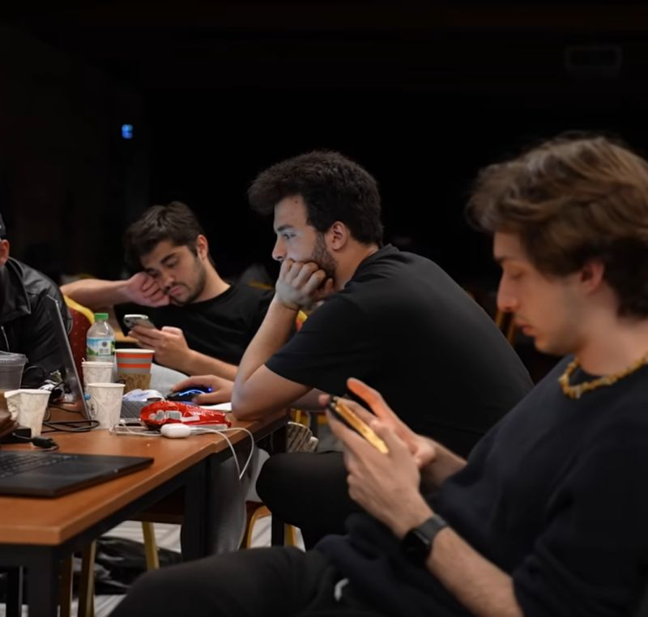
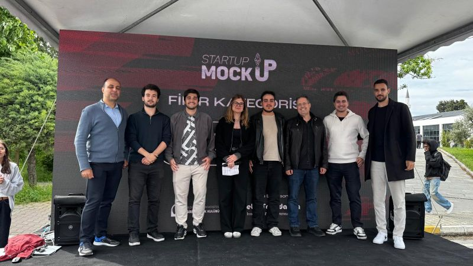
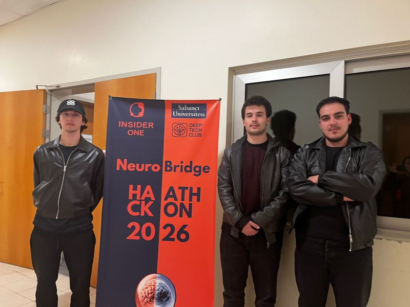

Ventures
BUILDING WITH PEOPLE
I constantly join hackathons and datathons, and I have friends who are as ambitious as me. We push each other to think faster, build better, and keep improving under pressure.
We have also joined online contests and used those experiences to develop ourselves. Every contest gives us a different problem, a different deadline, and a new reason to sharpen our technical and teamwork skills.
We also had a startup idea: a mobile application for autistic people, focused on helping with Theory of Mind situations. We joined pre-incubation programs and met important people through that process.
At the end of the day, because of legal limitations, we could not achieve that exact idea. Still, the process taught us a lot, and we continue trying to come up with different ideas that can create real value.